Ball Toss, Catch, Spin and Hold
Toss a baseball at least 20 cm, catch it, spin it 720° in the palm and hold it still.

Target environment at episode start (two fixed camera views; the same views as the feedback videos)
Task
Task: Ball Toss, Catch, and Spin
Your goal is to reproduce the dexterous manipulation skill demonstrated in the given human video using the Wuji Hand 2 in simulation and successfully execute it in the provided target environment.
The task is to toss a ball, catch it, spin it in the hand, and hold it.
- Human video:
demo/ - Target environment:
target/screenshot.png - Success criteria:
SUCCESS.md
Success criteria and progress rubric
Success Criteria: Ball Toss, Catch, and Spin
Complete all stages in order within 10 s (5000 steps at 500 Hz). Total progress score: 0–1.
1. Toss (0–0.25)
- 0: No release.
- 0.10: Upward release with ≥ 0.05 s contact-free flight.
- 0.25: Upward release, ≥ 0.10 s contact-free flight, apex ≥ 20 cm above release, and a physically consistent free-fall arc.
2. Catch (0–0.30)
- 0: No valid toss or recontact.
- 0.10: Hand recontacts the ball after a valid toss, before any environment contact.
- 0.30: Ball lands on the hand, touches nothing else afterward, and maintains speed < 0.02 m/s for ≥ 0.10 s while touching the hand. Define the first qualifying moment as
t_rest.
3. Spin (0–0.30)
- 0: < 90°
- 0.10: ≥ 90°
- 0.15: ≥ 180°
- 0.20: ≥ 360°
- 0.25: ≥ 540°
- 0.30: ≥ 720°
Measure signed net rotation about world +Z after t_rest (counterclockwise from above is positive). All milestones require contact gaps < 0.10 s and ball-center displacement ≤ 3 cm from its position at t_rest.
4. Hold (0–0.15)
- 0: Required spin incomplete or ball not retained.
- 0.05: After the spin, maintain hand contact and speed < 0.02 m/s for ≥ 0.10 s.
- 0.10: Maintain ≥ 720° net rotation, hand contact, and speed < 0.02 m/s throughout the final 0.15 s.
- 0.15: Maintain ≥ 720° net rotation and speed < 0.02 m/s throughout the final 0.30 s; hand contact at the final step.
Scoring: Award the highest satisfied milestone per stage. Later-stage scores require full completion of preceding stages. Earlier hops and regrasps before the qualifying toss are allowed.
Official success: Score = 1.0, with all physical, hardware, and runtime requirements satisfied in every required evaluation trial.
Demonstration frames
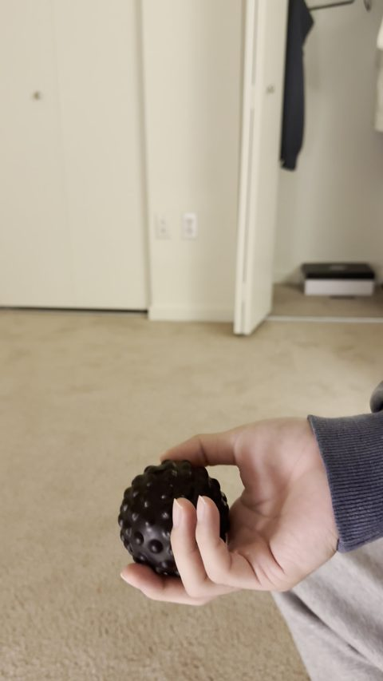
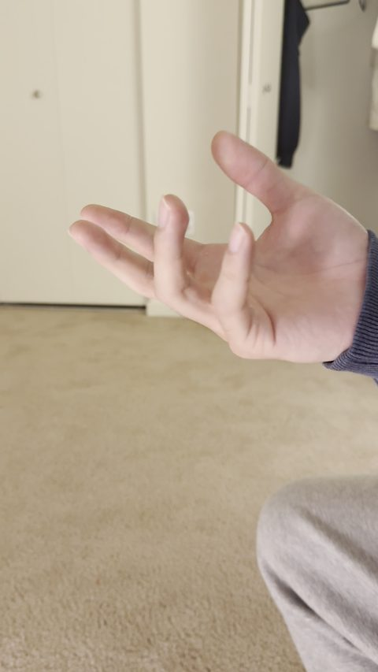
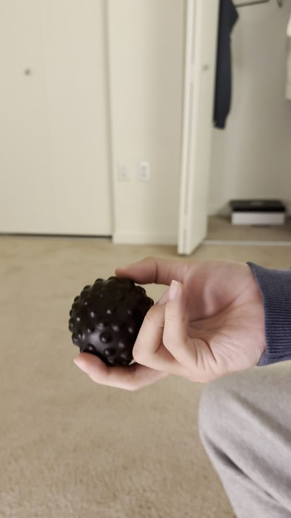
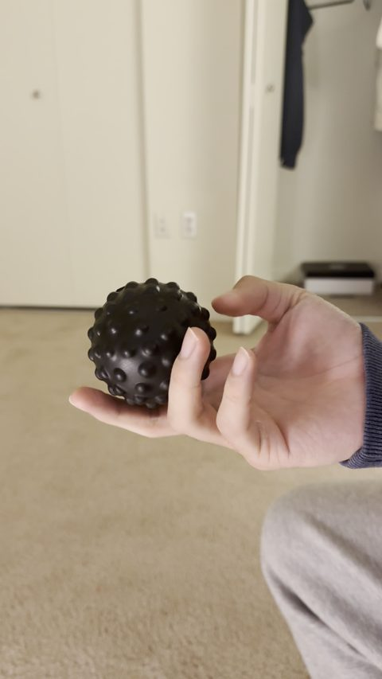
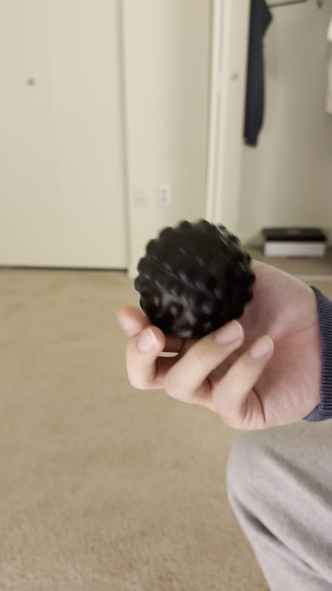
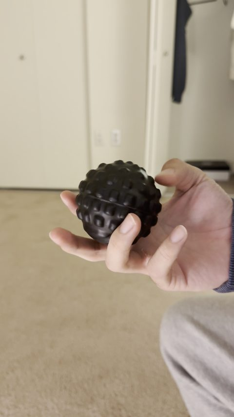
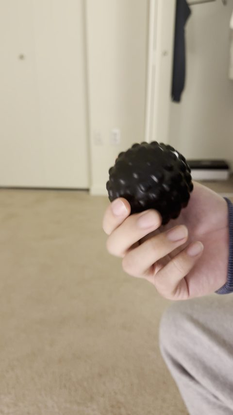
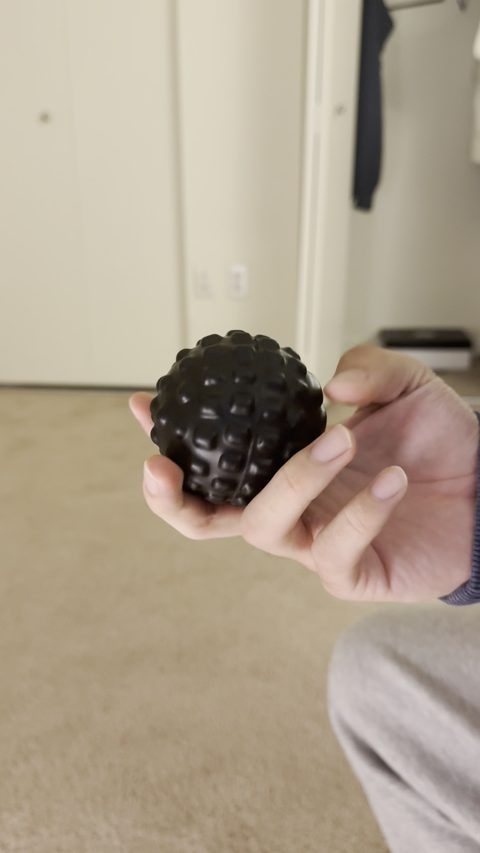
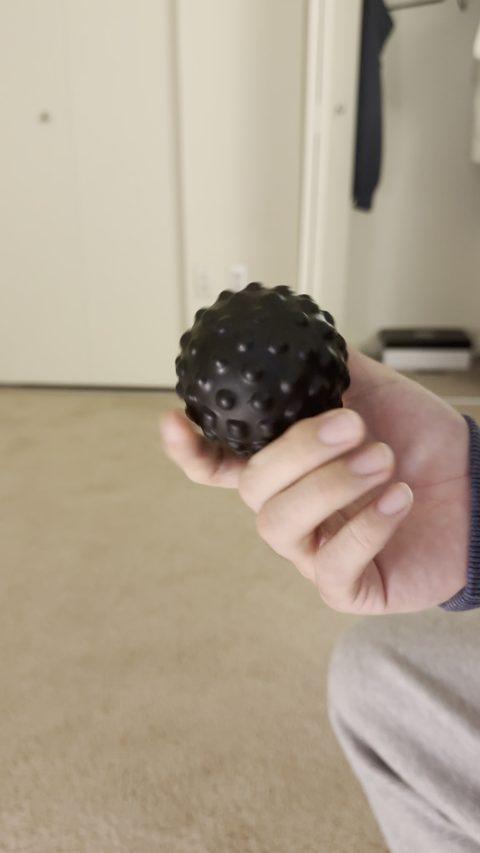
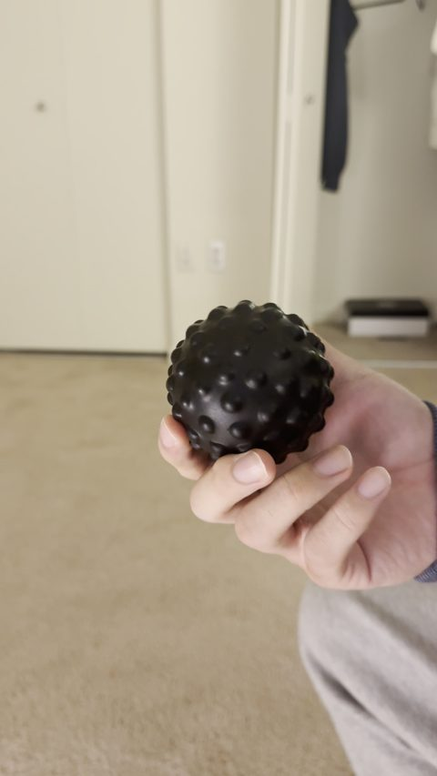
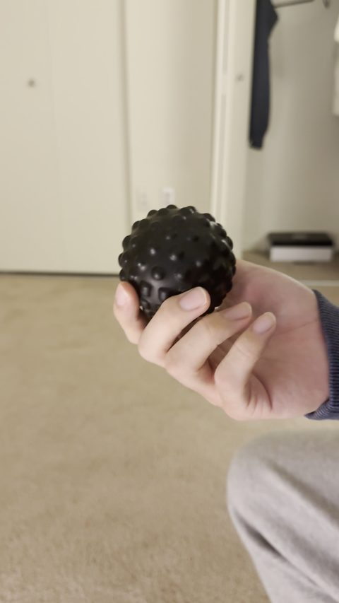
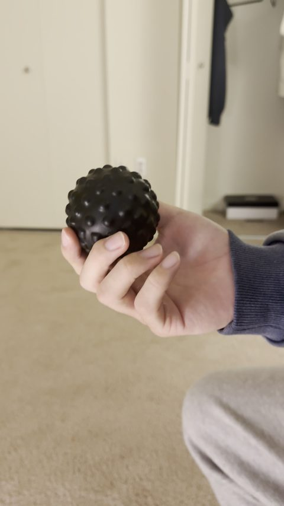
Documentation
Agent
● Ball Toss, Catch, Spin and Hold stopped
- Research time
- 27h 56m elapsed · 8h 18m active measured
- Submissions
- 18 / 100 measured
- Simulator
- MuJoCo from agent log
- Methods
- trajectory optimizationPPOreinforcement learningteacher-student distillationsystem identification
- Task progress
- agent-estimated no explicit estimate in the log yet
Hypothesis H5: missing/incorrect finger self-contacts cause large empty-hand mismatch independent of the ball. Cross-finger hull collision at default friction initially worsened some joints, but a low self-friction fit resolves much of this: empty-hand s02 RMS 0.123 -> 0.037 rad; genuinely held-out s07 0.137 -> 0.041 and s09 0.127 -> 0.032. An earlier held-out segment was static Q0, so only these motion comparisons substantiate generalization. Thumb MCP remains a major residual. Separate hand-ball and finger friction assumptions: best coarse retained fast/slow fit ball friction 1.2, torsion 0…
Task progress
Only numeric estimates the agent wrote in its own log; SuperDex reports no scores, and official verdicts are not shown.
The agent has not stated a numeric estimate yet.
| Trial | Score | Time | Agent's statement |
|---|---|---|---|
| No explicit estimate yet. | |||
Experiments: local simulation vs SuperDex
One card per SuperDex submission. Left: the same submitted package in the agent's own training simulator (matched by package hash). Right: what SuperDex returned. Summaries follow Hypothesis → Changes → Observed, with local-simulation and SuperDex observations kept separate; they are curated from the agent's own logs and package changes.
Best so far (agent's own judgement): s08 — research/research_log.txt: "Current best target retained sequence remains s08"; research/status.json: "s08 retention/spin and s17 small toss/catch are component evidence only; neither has verified required toss or hardware compliance."
| Trial | Submitted (EDT) | Type | What changed | Agent est. | Videos |
|---|---|---|---|---|---|
| s01 | 15:56 | baseline | other | – | SuperDex only |
| s02 | 16:12 | policy improvement | controller / trajectory, optimization method | – | paired |
| s03 | 16:17 | diagnostic probe | controller / trajectory | – | paired |
| s04 | 16:23 | policy improvement | physics / contact model, controller / trajectory, optimization method | – | paired |
| s05 | 16:29 | policy improvement | controller / trajectory | – | paired |
| s06 | 16:42 | diagnostic probe | controller / trajectory | – | paired |
| s07 | 16:47 | policy improvement | system identification, controller / trajectory | – | paired |
| s08 ★ | 16:58 | policy improvement | controller / trajectory | – | paired |
| s09 | 17:08 | policy improvement | controller / trajectory | – | paired |
| s10 | 18:12 | policy improvement | physics / contact model, system identification, controller / trajectory | – | paired |
| s11 | 18:49 | diagnostic probe | controller / trajectory, curriculum / data | – | paired |
| s12 | 19:00 | diagnostic probe | controller / trajectory, initial-state estimation | – | paired |
| s13 | 19:49 | diagnostic probe | system identification | – | paired |
| s14 | 20:34 | diagnostic probe | controller / trajectory, safety governor | – | paired |
| s15 | 21:58 | policy improvement | controller / trajectory, initial-state estimation, system identification | – | paired |
| s16 | 22:24 | policy improvement | controller / trajectory, system identification | – | paired |
| s17 | 22:41 | policy improvement | controller / trajectory | – | paired |
| s18 | 23:07 | policy improvement | controller / trajectory, optimization method | – | paired |
s01 · submitted 2026-10-21 15:56 EDT baseline
- Hypothesis
- Measure the target's unmodified start condition before spending trials on manipulation (part of H1 plan: local search before target trials).
- Changes
- Hold policy: returns prev_q_target[-1] (start pose) every step; no release.
- Observed local sim
- No local rollout of this package was saved.
- Observed SuperDex, agent's analysis
- "Baseline video retains the ball without release (no task progress)."; robot hold q differs from command by a few milliradians.
- Unverified
- Exact local validation of s01 not logged; hypothesis wording for s01 specifically is not written in the log (inferred from H1 plan and the package docstring).
- Failure
- No release, so no task progress.
- Next
- Infer ball start locally, then search flick (toss) and spin trajectories locally (flick1/spin1, staged_v1).
Task progress: agent-estimated none stated
No saved local rollout/render of this package exists in the agent workspace (only research/artifacts/settled.npz, a settled start state, not a rollout). Regenerating requires running agent code in the r2s2r_replay sandbox; copying the workspace into the sandbox was refused by this session's permission policy (remote writes blocked), so nothing was executed on AWS.
s02 · submitted 2026-10-21 16:12 EDT policy improvement
- Hypothesis
- H2: "transfer can be evaluated separately for launch height and spin direction even before qualifying toss"; a staged flick-then-spin trajectory from local derivative-free search is a useful first transfer test.
- Changes
- Open-loop 5000-step joint trajectory combining local flick1 launch and spin1 gait (trajectory.npz), replacing the hold.
- Observed local sim
- Local (v2 model): toss 0.1726 m (below 0.20 m), spin 36.98 rad, displacement 0.0235 m, settled final hold. Agent later found the v2 motor-speed clamp invalid ("Old v2 results are invalid").
- Observed SuperDex, agent's analysis
- "release occurs, ball travels away from the palm and drops; no catch, spin has no ball."
- Failure
- Ball leaves palm after release and drops; local model had a speed-clamp bug allowing too-fast joint displacement.
- Next
- Fix motor speed model (v3 position-increment limit), re-optimize catch (catch_v3, async_v3); run spin-only transfer test.
Task progress: agent-estimated none stated
How this simulation video was made: No pre-existing local render of this package; rendered from the agent's own saved local rollout trace research/artifacts/staged_v1_local.npz (written 2026-10-21 20:12:02 UTC), whose recorded commands were checked against the submitted package.
Differences from the SuperDex trial: Open-loop trajectory package (policy.py returns trajectory q[step], no velocity); trace targets equal package trajectory.npz q exactly (5000x20), so the trace is this package's rollout. Agent legacy native model clipped joint positions/velocities to limits (agent later says this 'hid' launch position/speed excursions, log 03:36 UTC); local contact/friction/motor parameters are the agent's fitted surrogate guesses, not target values; ball start is the agent's camera-inferred estimate; render add…
Model: Agent native MuJoCo rollout (research/src/sim.py + rollout.cpp, built model from research/src/local_model.py), legacy v2 helper (pre-v3 fix), default whole-hul… · initial state: Agent settled start state stored in the trace (initial, 53 values): hand at Q0, ball resting on palm at the agent's inferred start (approx. (-0.061,-0.002,0.332) m, log 20:15 UTC). · noise: Encoder noise irrelevant: open-loop package ignores observations; native rollout is deterministic. · 5000 steps · 10 s
s03 · submitted 2026-10-21 16:17 EDT diagnostic probe
- Hypothesis
- Spin can be tested in isolation: "spin_probe is an explicit isolated-stage transfer experiment; it cannot earn full task progress without toss/catch."
- Changes
- Open-loop spin-only gait trajectory (no toss), checked in the corrected v3 model.
- Observed local sim
- Corrected local spin-only test: 36.98 rad, max 0.0256 m displacement, retained final hold (speed 0.00034 m/s).
- Observed SuperDex, agent's analysis
- "spin-only target video retains and visibly rotates ball, then holds to final frame"; sparse optical flow estimate (3.07,-2.27,-6.73) rad camera-axis is "not a reliable world-Z milestone measurement".
- Failure
- Target rotation magnitude much lower/unknown vs local 37 rad; no toss/catch by design.
- Next
- Longer gait and calibrated rotation reconstruction.
Task progress: agent-estimated none stated
How this simulation video was made: No pre-existing local render of this package; rendered from the agent's own saved local rollout trace research/artifacts/spin_probe_local.npz (written 2026-10-21 20:16:41 UTC), whose recorded commands were checked against the submitted package.
Differences from the SuperDex trial: Open-loop trajectory package (policy.py returns trajectory q[step], no velocity); trace targets equal package trajectory.npz q exactly (5000x20), so the trace is this package's rollout. An EXISTING agent render of this same trace also exists: research/artifacts/rotation_calibration.mp4 (made by research/src/check_video_estimator.py at 20:29:42 UTC from spin_probe_local.npz, steps 500-2500 only = t 1-5 s, one camera duplicated side-by-side, extra seam sites, mpeg4); copied here as s03_existing_p…
Model: Agent native MuJoCo rollout, corrected v3 helper (rollout_v3, position increments limited per 1 ms), whole-hull contacts, friction 0.8 (sim.py defaults). · initial state: Agent settled start state stored in the trace (initial, 53 values): hand at Q0, ball resting on palm at the agent's inferred start (approx. (-0.061,-0.002,0.332) m, log 20:15 UTC). · noise: Encoder noise irrelevant: open-loop package ignores observations; native rollout is deterministic. · 5000 steps · 10 s
s04 · submitted 2026-10-21 16:23 EDT policy improvement
- Hypothesis
- After fixing the motor-speed model (v3), a staged toss/catch/spin trajectory optimized in the corrected model should transfer better than s02.
- Changes
- Re-optimized open-loop staged trajectory (launch + catch + spin) in the corrected v3 model.
- Observed local sim
- Agent's saved local trace (computed by this audit from the trace): ball rises ~0.18 m above start around 0.81 s and is held at final step. The log gives no explicit pre-submission numbers for s04.
- Observed SuperDex, agent's analysis
- "ball rises, recontacts the hand near ~1.0 s, then rolls off by ~1.6 s. Catch is not stable."
- Unverified
- Exact local metrics the agent used to accept s04 are not logged.
- Failure
- Open final catch posture permits rolling loss (H3); launch joint mismatch ~0.072 rad.
- Next
- H3: return to Q0 earlier during flight (early-catch grid), longer spin, finger preload search.
Task progress: agent-estimated none stated
How this simulation video was made: No pre-existing local render of this package; rendered from the agent's own saved local rollout trace research/artifacts/staged_v3_local.npz (written 2026-10-21 20:22:43 UTC), whose recorded commands were checked against the submitted package.
Differences from the SuperDex trial: Open-loop trajectory package (policy.py returns trajectory q[step], no velocity); trace targets equal package trajectory.npz q exactly (5000x20), so the trace is this package's rollout. Agent legacy native model clipped joint positions/velocities to limits (agent later says this 'hid' launch position/speed excursions, log 03:36 UTC); local contact/friction/motor parameters are the agent's fitted surrogate guesses, not target values; ball start is the agent's camera-inferred estimate; render add…
Model: Agent native MuJoCo rollout, v3 helper, whole-hull contacts (sim.py defaults); exact friction not recorded in trace. · initial state: Agent settled start state stored in the trace (initial, 53 values): hand at Q0, ball resting on palm at the agent's inferred start (approx. (-0.061,-0.002,0.332) m, log 20:15 UTC). · noise: Encoder noise irrelevant: open-loop package ignores observations; native rollout is deterministic. · 5000 steps · 10 s
s05 · submitted 2026-10-21 16:29 EDT policy improvement
- Hypothesis
- H3: "open final catch posture (MCP ~0.27, PIP ~2.05, DIP ~1.4) permits rolling loss; return to Q0 earlier during flight."
- Changes
- Early cradle return at 0.75-0.95 s and longer spin 1.65-9.0 s.
- Observed local sim
- Agent's saved local trace (audit computation): ~0.18 m rise, ball held to final step.
- Observed SuperDex, agent's analysis
- "retains the ball after landing, through spin, and to final frame"; approximate world-Z rotation 9.72 rad (~557 deg) with "material uncertainty"; toss "visually below 0.20 m".
- Failure
- Toss below 20 cm (remaining rise after 0.66 s ~0.06 m).
- Next
- H4 motor model fit (PD + torque-speed envelope); search higher ballistic release.
Task progress: agent-estimated none stated
How this simulation video was made: No pre-existing local render of this package; rendered from the agent's own saved local rollout trace research/artifacts/early_catch_v1_local.npz (written 2026-10-21 20:29:02 UTC), whose recorded commands were checked against the submitted package.
Differences from the SuperDex trial: Open-loop trajectory package (policy.py returns trajectory q[step], no velocity); trace targets equal package trajectory.npz q exactly (5000x20), so the trace is this package's rollout. Agent legacy native model clipped joint positions/velocities to limits (agent later says this 'hid' launch position/speed excursions, log 03:36 UTC); local contact/friction/motor parameters are the agent's fitted surrogate guesses, not target values; ball start is the agent's camera-inferred estimate; render add…
Model: Agent native MuJoCo rollout, v3 helper, whole-hull contacts (sim.py defaults). · initial state: Agent settled start state stored in the trace (initial, 53 values): hand at Q0, ball resting on palm at the agent's inferred start (approx. (-0.061,-0.002,0.332) m, log 20:15 UTC). · noise: Encoder noise irrelevant: open-loop package ignores observations; native rollout is deterministic. · 5000 steps · 10 s
s06 · submitted 2026-10-21 16:42 EDT diagnostic probe
- Hypothesis
- Compare target rotation rate across gait frequencies "for efficient target speed comparison".
- Changes
- "same retained toss/catch prefix followed by 1.8, 2.4, and 3.0 Hz gait segments".
- Observed local sim
- Local retention test passed before submission (log: "after local trajectory retention test"); saved trace holds ball to final step.
- Observed SuperDex, agent's analysis
- "retains ball across 1.8/2.4/3.0 Hz gait segments"; estimated net rates 2.88/2.71/2.32 rad/s.
- Failure
- Short blocks are orientation/occlusion sensitive; toss still below criterion.
- Next
- s08: full 7.35 s 1.8 Hz gait with the retained catch.
Task progress: agent-estimated none stated
How this simulation video was made: No pre-existing local render of this package; rendered from the agent's own saved local rollout trace research/artifacts/spin_speeds_local.npz (written 2026-10-21 20:41:27 UTC), whose recorded commands were checked against the submitted package.
Differences from the SuperDex trial: Open-loop trajectory package (policy.py returns trajectory q[step], no velocity); trace targets equal package trajectory.npz q exactly (5000x20), so the trace is this package's rollout. Agent legacy native model clipped joint positions/velocities to limits (agent later says this 'hid' launch position/speed excursions, log 03:36 UTC); local contact/friction/motor parameters are the agent's fitted surrogate guesses, not target values; ball start is the agent's camera-inferred estimate; render add…
Model: Agent native MuJoCo rollout (rollout_v4 era, motor-envelope model per log 20:43 UTC); exact version/params not recorded in trace. · initial state: Agent settled start state stored in the trace (initial, 53 values): hand at Q0, ball resting on palm at the agent's inferred start (approx. (-0.061,-0.002,0.332) m, log 20:15 UTC). · noise: Encoder noise irrelevant: open-loop package ignores observations; native rollout is deterministic. · 5000 steps · 10 s
s07 · submitted 2026-10-21 16:47 EDT policy improvement
- Hypothesis
- H4: "explicit 1 kHz PD plus a linear torque-speed envelope fits launch robot logs much better"; a launch optimized under the fitted motor model should toss higher and still catch.
- Changes
- New launch/catch trajectory searched in the fitted motor surrogate ("stronger motor-fit launch").
- Observed local sim
- Agent's saved local trace (audit computation) peaks ~0.19 m above start at 0.97 s and ends WITHOUT hand contact; log says "nominal surrogate returns to palm". The two are not reconciled in the log.
- Observed SuperDex, agent's analysis
- "stronger motor-fit launch misses catch; its ball path drifts outward".
- Unverified
- Which local model the agent used to accept s07, and why its saved trace ends without hand contact, is not stated.
- Failure
- Good joint-trajectory fit does not imply correct contact transfer.
- Next
- Photometric sphere tracking, static-grasp calibration, contact-geometry hypothesis (convex decomposition).
Task progress: agent-estimated none stated
How this simulation video was made: No pre-existing local render of this package; rendered from the agent's own saved local rollout trace research/artifacts/motor_catch_v1_local.npz (written 2026-10-21 20:46:25 UTC), whose recorded commands were checked against the submitted package.
Differences from the SuperDex trial: Open-loop trajectory package (policy.py returns trajectory q[step], no velocity); trace targets equal package trajectory.npz q exactly (5000x20), so the trace is this package's rollout. Agent legacy native model clipped joint positions/velocities to limits (agent later says this 'hid' launch position/speed excursions, log 03:36 UTC); local contact/friction/motor parameters are the agent's fitted surrogate guesses, not target values; ball start is the agent's camera-inferred estimate; render add…
Model: Agent native MuJoCo rollout with fitted motor envelope (rollout_v4 era); exact params not recorded in trace. · initial state: Agent settled start state stored in trace (ball start z ~0.330 m, slightly different from s02-s06). · noise: Encoder noise irrelevant: open-loop package ignores observations; native rollout is deterministic. · 5000 steps · 10 s
s08 · submitted 2026-10-21 16:58 EDT policy improvement best so far
- Hypothesis
- The retained s05 catch plus a long slow gait should accumulate more world-Z rotation: "s08 now tests a full 7.35 s 1.8 Hz gait with the known retained catch."
- Changes
- Same retained toss/catch prefix, then a single 7.35 s 1.8 Hz spin gait and final hold.
- Observed local sim
- Saved local trace holds ball to final step (audit computation); no explicit local metric logged.
- Observed SuperDex, agent's analysis
- "retains the ball through the long 1.8 Hz spin and final hold"; ~21.5 rad world-Z net rotation with "material camera/occlusion uncertainty"; toss below 20 cm.
- Failure
- Toss remains below 20 cm.
- Next
- Raise toss height: launch searches, MJX/PPO residual learning, self-contact model fixes.
Task progress: agent-estimated none stated
How this simulation video was made: No pre-existing local render of this package; rendered from the agent's own saved local rollout trace research/artifacts/slow_spin_full_local.npz (written 2026-10-21 20:56:37 UTC), whose recorded commands were checked against the submitted package.
Differences from the SuperDex trial: Open-loop trajectory package (policy.py returns trajectory q[step], no velocity); trace targets equal package trajectory.npz q exactly (5000x20), so the trace is this package's rollout. Agent legacy native model clipped joint positions/velocities to limits (agent later says this 'hid' launch position/speed excursions, log 03:36 UTC); local contact/friction/motor parameters are the agent's fitted surrogate guesses, not target values; ball start is the agent's camera-inferred estimate; render add…
Model: Agent native MuJoCo rollout (rollout_v5 era); exact params not recorded in trace. · initial state: Agent settled start state stored in the trace (initial, 53 values): hand at Q0, ball resting on palm at the agent's inferred start (approx. (-0.061,-0.002,0.332) m, log 20:15 UTC). · noise: Encoder noise irrelevant: open-loop package ignores observations; native rollout is deterministic. · 5000 steps · 10 s
s09 · submitted 2026-10-21 17:08 EDT policy improvement
- Hypothesis
- Delaying finger timing (from a local timing grid) may raise the launch while keeping the catch.
- Changes
- Open-loop trajectory with "delayed finger timing" relative to the retained sequence (research/artifacts/timing_grid.npz holds 75 timing settings).
- Observed local sim
- Pre-submission local result not logged. Post-hoc separate-contacts model (22:05 UTC) "lose[s] retention", consistent with target.
- Observed SuperDex, agent's analysis
- "s09 delayed finger timing loses the catch".
- Unverified
- Exact hypothesis wording and pre-submission local metrics for s09 are not in the log; hypothesis above is inferred from "delayed finger timing" and timing_grid.npz.
- Failure
- Catch lost.
- Next
- Self-contact/friction recalibration (H5) using s02/s07/s09 as held-out motions.
Task progress: agent-estimated none stated
How this simulation video was made: No pre-existing local render of this package; rendered from the agent's own saved local rollout trace research/artifacts/separate_contacts_s09.npz (written 2026-10-21 22:05:08 UTC), whose recorded commands were checked against the submitted package.
Differences from the SuperDex trial: Open-loop trajectory package (policy.py returns trajectory q[step], no velocity); trace targets (taken from the s09 target command log) equal package trajectory.npz q exactly (5000x20), so the trace is this package's rollout. Model differs from whatever the agent used before submitting s09. Agent legacy native model clipped joint positions/velocities to limits (agent later says this 'hid' launch position/speed excursions, log 03:36 UTC); local contact/friction/motor parameters are the agent's f…
Model: Agent native MuJoCo rollout in the LATER separate-contacts model (research/src/fit_separate_contacts.py; ball friction 1.2, torsion 0.02, softness 0.004, condi… · initial state: Agent settled start for that model (stored in trace). · noise: Encoder noise irrelevant: open-loop package ignores observations; native rollout is deterministic. · 5000 steps · 10 s
s10 · submitted 2026-10-21 18:12 EDT policy improvement
- Hypothesis
- A launch designed in the new conservative motor/contact model (H5 low-friction self contacts, separate hand-ball friction) will transfer: "Cross_staged1 is a transfer test from the new conservative motor/contact model".
- Changes
- First 1.5 s new trajectory, 0.4 s Q0 return, known 1.8 Hz spin 2.0-9.0 s, 0.55 s return and 0.45 s hold.
- Observed local sim
- Local audited rise 0.1233 m, 0.33 s flight, settled catch, final contact, final-window peak speed 0.00158 m/s.
- Observed SuperDex, agent's analysis
- "ball rolls outward and falls before the intended main launch (~0.7 s); no catch/spin."
- Failure
- Predicted retention falsified; empty-hand fit does not predict ball transfer.
- Next
- Exact palm surface geometry, stereo ball-start reconstruction, thumb-supported launch (H6).
Task progress: agent-estimated none stated
How this simulation video was made: No pre-existing local render of this package; rendered from the agent's own saved local rollout trace research/artifacts/cross_staged1.npz (written 2026-10-21 22:11:55 UTC), whose recorded commands were checked against the submitted package.
Differences from the SuperDex trial: Open-loop trajectory package (policy.py returns trajectory q[step], no velocity); trace targets equal package trajectory.npz q exactly (5000x20), so the trace is this package's rollout. Agent legacy native model clipped joint positions/velocities to limits (agent later says this 'hid' launch position/speed excursions, log 03:36 UTC); local contact/friction/motor parameters are the agent's fitted surrogate guesses, not target values; ball start is the agent's camera-inferred estimate; render add…
Model: Agent native MuJoCo rollout with separate hand-ball/self contacts (cross-finger self-collision) and fitted motor envelope; matches research/artifacts/cross_sta… · initial state: Agent settled start state stored in the trace (initial, 53 values): hand at Q0, ball resting on palm at the agent's inferred start (approx. (-0.061,-0.002,0.334) m, log 20:15 UTC). · noise: Encoder noise irrelevant: open-loop package ignores observations; native rollout is deterministic. · 5000 steps · 10 s
s11 · submitted 2026-10-21 18:49 EDT diagnostic probe
- Hypothesis
- H6: long-finger scoop lacks speed margin; "prepare a thumb-supported grasp then extend the thumb". s11 "deliberately tests grasp transfer only".
- Changes
- "first 2.5 s aligned thumb preparation, then constant final pose" (from a 30-parameter grasp-transfer curriculum).
- Observed local sim
- Native 10 s retention, final contact, max final-window speed 0.000199 m/s, distal-thumb support ~0.907 N.
- Observed SuperDex, agent's analysis
- "s11 loses ball during preparation (~0.8 s); thumb support did not transfer."
- Failure
- Thumb support did not transfer; joint q diverges from local reference by 0.2-0.6 s (thumb flex 0.671 vs 0.469).
- Next
- Proprioceptive capture controller instead of continuing fragile preparation (s12).
Task progress: agent-estimated none stated
How this simulation video was made: No pre-existing local render of this package; rendered from the agent's own saved local rollout trace research/artifacts/thumb_grasp_probe.npz (written 2026-10-21 22:48:21 UTC), whose recorded commands were checked against the submitted package.
Differences from the SuperDex trial: Open-loop trajectory package (policy.py returns trajectory q[step], no velocity); trace targets equal package trajectory.npz q exactly (5000x20), so the trace is this package's rollout. Agent legacy native model clipped joint positions/velocities to limits (agent later says this 'hid' launch position/speed excursions, log 03:36 UTC); local contact/friction/motor parameters are the agent's fitted surrogate guesses, not target values; ball start is the agent's camera-inferred estimate; render add…
Model: Agent native MuJoCo rollout, v6 helper with force features, CoACD/whole-hull model of that time; exact contact params not recorded in trace. · initial state: Agent settled start state stored in trace (ball z ~0.326 m, from stereo/palm-surface work). · noise: Encoder noise irrelevant: open-loop package ignores observations; native rollout is deterministic. · 5000 steps · 10 s
s12 · submitted 2026-10-21 19:00 EDT diagnostic probe
- Hypothesis
- The target retains the ball early, so "test a proprioceptive capture rather than continuing fragile preparation".
- Changes
- Complementary-filter joint estimate (integrates noisy qd, corrects from q); "freezes estimated current q at 0.35 s with a small bounded closing bias".
- Observed local sim
- "All three local models retain at 3 s, final-window speeds <0.00014 m/s for selected setting".
- Observed SuperDex, agent's analysis
- "retains ball through every inspected frame to 9.9 s, visibly stationary after settling." Grasp/hold component evidence only.
- Failure
- No toss by design.
- Next
- Use captured grasp as a reliable preparation; guarded slow progression (s14); thumb-ready launch searches.
Task progress: agent-estimated none stated
How this simulation video was made: No pre-existing local render of this package; rendered from the agent's own saved local rollout trace research/artifacts/capture_175_0.5_coacd_contacts.json.npz (written 2026-10-21 22:58:17 (written by research/src/capture_grasp_grid.py) UTC), whose recorded commands were checked against the submitted package.
Partial episode: the simulation covers only the last 3 s (from t = 7 s), as in the agent's own validation; the SuperDex video covers all 10 s.
Differences from the SuperDex trial: Closed-loop package. Trace is the grid run with freeze_step 175 and bias scale 0.5, identical to the package config (freeze_step 175, same bias), same policy.py (sha256 fa78176d...) and trajectory.npz equal to thumb_grasp_probe targets; first 175 commanded targets equal package q exactly. Horizon is 3 s (1500 steps), the agent's own validation horizon, not the 10 s SuperDex episode. Agent legacy native model clipped joint positions/velocities to limits (agent later says this 'hid' launch positi…
Model: Agent Python MuJoCo evaluator research/src/evaluate_actor_cpu.py with CoACD contact config (research/artifacts/coacd_contacts.json), same as the package config… · initial state: Agent settled start state stored in trace. · noise: Encoder noise ON (sigma_q 0.002 rad, sigma_qd 0.05 rad/s), seed 0. · 1500 steps · 3 s
s13 · submitted 2026-10-21 19:49 EDT diagnostic probe
- Hypothesis
- "aims to identify unpublished torque-speed behavior without conflating ball/self-contact forces".
- Changes
- "Deliberately releases ball before isolated index MCP, thumb CMC flex, index PIP steps".
- Observed local sim
- Strict native hardware audit: zero position/speed excess; zero simulated self-contact during isolated pulses.
- Observed SuperDex, agent's analysis
- "video confirms empty hand and isolated separated-finger motions"; fit supports a linear torque-speed envelope (~1.0-1.05).
- Failure
- Not a task attempt; envelope fit retained nominal 1.0 after index-alignment correction.
- Next
- Contact-guided launch curriculum and rebound search; nominal motor envelope.
Task progress: agent-estimated none stated
How this simulation video was made: No pre-existing local render of this package; rendered from the agent's own saved local rollout trace research/artifacts/motor_probe.npz (written 2026-10-21 23:46:07 UTC), whose recorded commands were checked against the submitted package.
Differences from the SuperDex trial: Open-loop trajectory package (policy.py returns trajectory q[step], no velocity); trace targets equal package trajectory.npz q exactly (5000x20), so the trace is this package's rollout. Local run is empty-hand from t=0, whereas in SuperDex the ball starts in the hand and is dropped by the package; the ball is not visible in this render. Agent legacy native model clipped joint positions/velocities to limits (agent later says this 'hid' launch position/speed excursions, log 03:36 UTC); local cont…
Model: Agent native MuJoCo rollout (strict joint-limit v8/v9 era) with the ball parked off-scene (ball z ~995 m in the trace), i.e. an empty-hand model. · initial state: Hand at Q0; ball removed from the scene in the local run. · noise: Encoder noise irrelevant: open-loop package ignores observations; native rollout is deterministic. · 5000 steps · 10 s
s14 · submitted 2026-10-21 20:34 EDT diagnostic probe
- Hypothesis
- A slow, error-bounded joint servo after the proven 0.35 s capture can carry the ball to a launch-ready grasp; "This tests grasp transfer only".
- Changes
- "exact first 0.35 s of successful capture prefix, then a complementary-filter joint estimate follows a shifted local joint-position path with bounded servo error and tracking-dependent phase speed; freezes current grasp at 3.5 s."
- Observed local sim
- "retains in 9/9 full 10 s local tests across no-self, whole-hull self and CoACD self models x 3 encoder seeds"; max final-window speed 0.000742 m/s; hardware audits pass.
- Observed SuperDex, agent's analysis
- "retains through every inspected frame to 9.9 s, visibly stationary after 4 s. It transfers ball outward onto the fingers"; reached grasp differs from local prediction ("substantially wrong").
- Unverified
- Which of the 9 local runs the agent considers nominal is not stated; the CoACD seed-0 run is rendered because the package config names coacd_contacts.json.
- Failure
- Different, lower fingertip grasp than predicted.
- Next
- Calibrate a launch to the actually attained s14 grasp (s15).
Task progress: agent-estimated none stated
How this simulation video was made: No pre-existing local render of this package; rendered from the agent's own saved local rollout trace research/artifacts/guarded_grasp1_full_coacd_contacts.json_0.npz (written 2026-10-22 00:33:21 UTC), whose recorded commands were checked against the submitted package.
Differences from the SuperDex trial: Closed-loop package; provenance by timestamp (trace written 65 s before submission), matching guarded_grasp1_full_validation.json (CoACD seed 0 retained) and the log's 9/9 statement; package reference.npz commands equal thumb_grasp_probe targets and first 175 trace targets equal them exactly. Writing script for guarded_grasp1_full_* is not in research/src. Agent legacy native model clipped joint positions/velocities to limits (agent later says this 'hid' launch position/speed excursions, log 03…
Model: Agent Python MuJoCo evaluator research/src/evaluate_actor_cpu.py, CoACD contact config (as in package config.json). · initial state: Agent settled start state stored in trace. · noise: Encoder noise ON (sigma_q 0.002, sigma_qd 0.05), seed 0. · 5000 steps · 10 s
s15 · submitted 2026-10-21 21:58 EDT policy improvement
- Hypothesis
- Reusing the target-verified s14 preparation, a fixed launch pulse calibrated to the actually attained grasp can produce a toss and recatch.
- Changes
- "launches at 4.0 s with a fixed q-reference/velocity-feedforward pulse, returns to captured grasp over 0.20 s, then freezes a filtered encoder anchor at 5 s".
- Observed local sim
- "Offline aligned curriculum tests retain 3/3 nominal encoder-noise seeds with ~0.092 m toss; all 15 other friction/condim/noise checks fail retention. Full Q0 local replay fails".
- Observed SuperDex, agent's analysis
- "outward preparation retains, small launch/recontacts occur, ball is lost by 5 s"; rise ~0.167 m upper bound; catch-position mismatch. No 20 cm toss.
- Failure
- Ball lands away from where the controller returns (catch-position mismatch).
- Next
- Fit forward models to s15 data; palm-cup catch (s16).
Task progress: agent-estimated none stated
How this simulation video was made: No pre-existing local render of this package; rendered from the agent's own saved local rollout trace research/artifacts/grasp_toss1_0.6_4_0.npz (written 2026-10-22 01:49:23 (written by research/src/validate_grasp_toss.py) UTC), whose recorded commands were checked against the submitted package.
Partial episode: the simulation covers only the last 6 s (from t = 4 s), as in the agent's own validation; the SuperDex video covers all 10 s.
Differences from the SuperDex trial: Validation ran on research/packages/grasp_toss_catch1, which differs from the submitted deploy copy only by evaluator-only config keys (friction/softness/contact_config, not read by policy.py) and the manifest; launch.npz/reference.npz/policy.py identical. Horizon is t=4-10 s only (agent's own validation horizon); the agent's full-episode Q0 replay (grasp_toss1_continuous_local) loses the ball and is not rendered. Agent legacy native model clipped joint positions/velocities to limits (agent lat…
Model: Agent aligned evaluator research/src/evaluate_aligned_policy.py: friction 0.6, condim 4, torsion 0.02, solref 0.004, cross self-collision (self friction 0.05),… · initial state: Simulation starts at step 2000 (t=4.0 s) from research/artifacts/s14_reconstructed_initial.npz (agent reconstruction of the s14 target grasp); policy state primed by replaying the s14 SuperDex encoder log for steps 0-1999. · noise: Encoder noise ON, seed 0. · 3000 steps · 6 s
s16 · submitted 2026-10-21 22:24 EDT policy improvement
- Hypothesis
- Fitted forward models of s15 imply a palm-cup return posture will catch the same small toss.
- Changes
- "same preparation and launch as s15, return over .25 s toward a palm cup (thumbCF.2, longMCP.8/PIP1.1/DIP.6), capture filtered encoder anchor at 5 s".
- Observed local sim
- "Aligned noisy-encoder replay retains 10/10 across two fitted models x five seeds"; "Broader contact/initial-state sweep retains 18/72".
- Observed SuperDex, agent's analysis
- "s16 palm catch fails in target; stereo reconstruction shows more lateral drift, not a higher toss".
- Failure
- Encoder-dependent guarded preparation varied the final grasp (~0.04-0.05 rad), shifting landing laterally.
- Next
- Replay own s15 command history to remove that variation (s17).
Task progress: agent-estimated none stated
How this simulation video was made: No pre-existing local render of this package; rendered from the agent's own saved local rollout trace research/artifacts/palm_catch1_4_0.npz (written 2026-10-22 02:23:29 (written by research/src/validate_palm_catch.py) UTC), whose recorded commands were checked against the submitted package.
Partial episode: the simulation covers only the last 6 s (from t = 4 s), as in the agent's own validation; the SuperDex video covers all 10 s.
Differences from the SuperDex trial: Validated path research/packages/palm_catch1 is byte-identical to the submitted deploy copy except the manifest. Horizon t=4-10 s only. Agent legacy native model clipped joint positions/velocities to limits (agent later says this 'hid' launch position/speed excursions, log 03:36 UTC); local contact/friction/motor parameters are the agent's fitted surrogate guesses, not target values; ball start is the agent's camera-inferred estimate; render adds red seam markers on the ball (visual only) and u…
Model: Agent aligned evaluator with fitted model s15_forwardfit1 (condim 4; agent fit mu~0.309, torsion~0.0247), one of the two models used for its 10/10 check. · initial state: Simulation starts at step 2000 (t=4.0 s) from the s15_forwardfit1 initial state (reconstructed pre-launch grasp); policy state primed with the s15 SuperDex encoder log. · noise: Encoder noise ON, seed 0. · 3000 steps · 6 s
s17 · submitted 2026-10-21 22:41 EDT policy improvement
- Hypothesis
- Replaying our own s15 command history (instead of encoder-dependent guarded preparation) removes sensor-driven grasp variation so the palm catch works.
- Changes
- Replay of s15 commands to step 2500, then the same palm-return catch and encoder-anchor hold.
- Observed local sim
- "local 10/10 aligned tests retained".
- Observed SuperDex, agent's analysis
- "Target video shows small toss, catch and retention through 9.9 s"; no qualifying 20 cm toss.
- Failure
- Toss too small; later audit finds the legacy launch exceeded thumb-CMC position and joint speed limits.
- Next
- Second toss (rebound) from the s17 incoming-ball state via sampling MPC/CMA (s18).
Task progress: agent-estimated none stated
How this simulation video was made: No pre-existing local render of this package; rendered from the agent's own saved local rollout trace research/artifacts/replay_palm_catch1_4_0.npz (written 2026-10-22 02:39:41 UTC), whose recorded commands were checked against the submitted package.
Partial episode: the simulation covers only the last 6 s (from t = 4 s), as in the agent's own validation; the SuperDex video covers all 10 s.
Differences from the SuperDex trial: Trace targets/velocities for steps 2000-2499 equal the package trajectory.npz exactly. Horizon t=4-10 s only. Agent legacy native model clipped joint positions/velocities to limits (agent later says this 'hid' launch position/speed excursions, log 03:36 UTC); local contact/friction/motor parameters are the agent's fitted surrogate guesses, not target values; ball start is the agent's camera-inferred estimate; render adds red seam markers on the ball (visual only) and uses two free cameras, not…
Model: Agent aligned evaluator, fitted model s15_forwardfit1 (condim 4). · initial state: Starts at t=4.0 s from s15_forwardfit1 initial state; policy primed with s15 SuperDex encoder log. · noise: Encoder noise ON, seed 0. · 3000 steps · 6 s
s18 · submitted 2026-10-21 23:07 EDT policy improvement
- Hypothesis
- From the s17 incoming-ball state, an offline-planned force pulse can produce a higher second toss with retention.
- Changes
- Same s17 prefix to step 2130, then an offline-planned torque pulse (sampling MPC + final-acceleration CMA), return toward Q0 and encoder-anchor hold.
- Observed local sim
- "Noisy encoder validation retains 5/5 nominal cases at ~.132-.135 m but 0/5 alternative-contact cases".
- Observed SuperDex, agent's analysis
- "target loses ball by 4.6 s before a useful second toss, rejecting the nominal transfer prediction."
- Failure
- Ball lost early; nominal contact model wrong. Hardware audit then found legacy launches exceeded position/speed limits.
- Next
- Unclipped v22/v23 physics with JointGuard; guarded teacher training (s15 position residual, 0.08 kg bounce curriculum, direct force from Q0).
Task progress: agent-estimated none stated
How this simulation video was made: No pre-existing local render of this package; rendered from the agent's own saved local rollout trace research/artifacts/replay_rebound1_4_0.npz (written 2026-10-22 03:05:49 UTC), whose recorded commands were checked against the submitted package.
Partial episode: the simulation covers only the last 6 s (from t = 4 s), as in the agent's own validation; the SuperDex video covers all 10 s.
Differences from the SuperDex trial: Trace targets/velocities for steps 2000-2129 equal package trajectory.npz exactly. Horizon t=4-10 s only. Agent legacy native model clipped joint positions/velocities to limits (agent later says this 'hid' launch position/speed excursions, log 03:36 UTC); local contact/friction/motor parameters are the agent's fitted surrogate guesses, not target values; ball start is the agent's camera-inferred estimate; render adds red seam markers on the ball (visual only) and uses two free cameras, not the…
Model: Agent aligned evaluator, fitted model s15_forwardfit1 (condim 4), the "nominal" model (alternative point-contact model lost 0/5). · initial state: Starts at t=4.0 s from s15_forwardfit1 initial state; policy primed with s15 SuperDex encoder log. · noise: Encoder noise ON, seed 0. · 3000 steps · 6 s
Feedback v2: three cameras and the sensor-based verifier
Replays of this agent's own submissions under feedback protocol v2. Everything below is what an agent would receive: camera videos and a report computed only from the cameras and the robot's own logs. Scores are sensor readings against SUCCESS.md, not official results.
Replay of s05 sensor sv-2.0
- Sensor score
- 0.10 · failure
- Confidence
- 1.00
- Hardware
- violation measured position / speed, estimated torque
- Runtime
- valid, 5000 / 5000 steps
- max height m
- 0.4398
- start height m
- 0.3241
- max speed mps
- 1.2321
- net rotation z deg
- 1030.9
- releases
- 1
Milestones
| Stage | Value | Milestone | Reached | Time |
|---|---|---|---|---|
| toss | 0.10 | upward release, >= 0.05 s contact-free flight | yes | 0.66 s |
| toss | 0.25 | upward release, >= 0.10 s flight, apex >= 20 cm, free-fall arc | – | 0.66 s |
| catch | 0.10 | hand recontacts the ball first | – | |
| catch | 0.30 | lands on the hand, touches nothing else, rests (< 0.02 m/s, 0.1 s) | – | |
| spin | 0.10 | >= 90 deg about +Z after rest | – | |
| spin | 0.15 | >= 180 deg about +Z after rest | – | |
| spin | 0.20 | >= 360 deg about +Z after rest | – | |
| spin | 0.25 | >= 540 deg about +Z after rest | – | |
| spin | 0.30 | >= 720 deg about +Z after rest | – | |
| hold | 0.05 | after the spin: contact and < 0.02 m/s for 0.1 s | – | |
| hold | 0.10 | final 0.15 s: >= 720 deg, contact, < 0.02 m/s | – | |
| hold | 0.15 | final 0.30 s: >= 720 deg, < 0.02 m/s; contact at the end | – |
Events (1)
- release · 0.66 s
flight 0.260 s, apex 7.5 cm above release
Hardware
- Status
- violation
- Reason
- measured joint position within encoder noise of its limit (r_index_finger_mcp_abd); measured joint speed beyond its limit (r_thumb_mcp, first at 0.512 s); actuator saturated (estimated) in 71.3 % of steps; not a violation
- measured joint positions
- uncertain (largest measured excess beyond a URDF limit 0.0 rad)
- measured joint speeds
- violation (largest speed / limit 1.3293)
- estimated torque demand / effort
- 11.9169 (over the limit in 71.3 % of steps)
Evaluation history
measured submission and completion times from the SuperDex records. "done" means the trial ran, not that it succeeded.
| Trial | Submitted (EDT) | Finished | Execution | Video |
|---|---|---|---|---|
| s18 | 23:07 | 23:10 | done | video |
| s17 | 22:41 | 22:45 | done | video |
| s16 | 22:24 | 22:27 | done | video |
| s15 | 21:58 | 22:01 | done | video |
| s14 | 20:34 | 20:40 | done | video |
| s13 | 19:49 | 19:50 | done | video |
| s12 | 19:00 | 19:07 | done | video |
| s11 | 18:49 | 18:52 | done | video |
| s10 | 18:12 | 18:14 | done | video |
| s09 | 17:08 | 17:10 | done | video |
| s08 | 16:58 | 17:02 | done | video |
| s07 | 16:47 | 16:49 | done | video |
| s06 | 16:42 | 16:46 | done | video |
| s05 | 16:29 | 16:33 | done | video |
| s04 | 16:23 | 16:24 | done | video |
| s03 | 16:17 | 16:20 | done | video |
| s02 | 16:12 | 16:14 | done | video |
| s01 | 15:56 | 15:59 | done | video |
All published trial videos (18)
Research timeline
from agent log hypotheses, experiments, observations and decisions, newest first (sanitized excerpts of the agent's own research log).
- note · 23:36 EDT
03:36 UTC — JointGuard uses only permitted encoders; source is research/src/joint_guard.py. No target conditions changed. New --guarded-physics GPU mode retains raw physical states, realizes guarded commands with2 ms hold, and terminates/penalizes own training episodes on1 kHz hardware violations. Native teacher export now checks unclipped v23 and records1 kHz compliance; Python noisy-encoder evaluators likewise bypass state clamps in guarded mode. Legacy mode remains explicitly labeled for reproducibility. Stopped all legacy GPU jobs. Restarted GPU1 teacher_guarded_s15_pos1 (position residual around the fitted launch), GPU2 teacher_guarded_bounce08_1 (own .08 kg mass curriculum, native verification remains .145 kg), and GPU3 teacher_guarded_direct_q0_1 (direct force requests from Q0). Privileged teachers remain local only. Future target submissions require unclipped local/noise checks,…
- note · 23:36 EDT
03:36 UTC — Replaced physical-state clamps in new native v22/v23 with real dynamics, motor effort/torque-speed limits and soft joint stops. v22 audits unguarded controls; v23 applies a proprioceptive command guard and logs actual guarded q/v commands. Both record maximum position/speed excess at every1 ms tick in features8/9; full episodes continue after a dropped ball. Unguarded s17 controls reproduce1.45–1.69 rad/s speed excess; joint-stop compliance changes position excess. Initial per-joint braking passes four native variants but GPU stress has93 violating chunks, maximum position excess.00439 rad. Added a50 ms whole-hand braking response before a joint reaches its boundary to prevent coupled finger overdrive. Revised guard passes all four native variants and128 GPU worlds with zero1 kHz position/speed violations. It reduces the old launch to~.03 m and loses catch, requiring reoptim…
- observation · 23:36 EDT
03:36 UTC — IMPORTANT HARDWARE AUDIT CORRECTION: Public encoder logs show launch thumb-CMC position excursions beyond upper1.291 rad (s15 local5-frame mean~1.304 at4.108 s; s17~1.302), and speed excursions supported by20 ms position differences (s15 middle DIP14.41 vs13.5 rad/s; s08 middle PIP16.03 vs12.86). These exceed ordinary sensor-noise explanations. Legacy native/GPU simulations forcibly clipped actual joint positions/velocities, which hid this behavior. Those model results remain proposal experiments, not hardware-compliance certificates. Retire the legacy launches/spins as compliant candidates. The fixed s15/s17 preparation before4.0 s shows no measured position excess and maximum raw speed~.52 of limit, so it remains a useful preparation primitive. No target policy has verified full hardware compliance or task success.
- submission · 23:36 EDT
03:36 UTC — From the independent simulator's incoming-ball state along the s17 prefix, sampling MPC obtains a second toss~.127 m with retention in the condim4 fit; point-friction fit~.043 m. Global shared-torque proposals reach~.099 m. Local final-acceleration CMA improves the nominal second toss to~.139 m; larger~.196 m total rise includes hand-contact lifting and is not toss height. Noisy encoder validation retains5/5 nominal cases at~.132–.135 m but0/5 alternative-contact cases. Submitted s18 replay_rebound1 after local preflight and remote validation pass; target loses ball by4.6 s before a useful second toss, rejecting the nominal transfer prediction. 18 used /82 remaining.
- submission · 23:36 EDT
03:36 UTC — s16 palm catch fails in target; stereo reconstruction shows more lateral drift, not a higher toss (apex~.447 m vs s15~.458 m). Gravity-fixed fit over4.16–4.35 s gives predicted palm-plane landing y~.0666 m vs s15~.0287 m. Guarded preparation's encoder-dependent phase amplified small sensor differences: final long MCP/PIP posture varies~.04–.05 rad. Replayed only our own s15 command history to eliminate this variation, then applied the same palm-return catch. Submitted s17 replay_palm_catch1; local10/10 aligned tests retained. Target video shows small toss, catch and retention through9.9 s. s15/s17 first2060 q/v commands are identical; observed q RMS.002834 /qd RMS.07099 match documented independent sensor noise. This supports repeatable physical dynamics under fixed commands. It is catch-component evidence; no qualifying20 cm toss or full success.
- observation · 22:26 EDT
02:26 UTC — GPU student_capacity3 emits an EPA-horizon24 collision-buffer warning near update870; stopped its plateaued run. Its independently native-audited checkpoints remain valid individual tests, while GPU aggregate metrics do not certify correct trajectories. teacher_extended1 stopped after~850 updates; latest native mean remains~.07 m and loses retention. New bounded torque-residual PPO uses legal velocity feedforward plus explicit physical motor guards: teacher_s15_torque1 learns around the fitted launch, teacher_bounce_torque3 allows later energy-adding hops from Q0. New teacher_spin_prime1 tests a horizontal-spin energy-storage curriculum from a local loaded thumb grasp, with a center-gated rotational-energy potential for the first.4 s. This is a mechanical hypothesis, not measured launch improvement; privileged teachers remain undeployed.
- note · 22:26 EDT
02:26 UTC — Native four-finger balanced preparation remains trapped at three contacts; all27 direct pinky placement motions lose the ball. Paused that hypothesis. A separate static curriculum feasibility sweep finds35/4096 stable near-extended holds, including three distal pads with normal forces~.5 N each. Their synchronized torque launch reaches only~.074 m. These curriculum resets do not establish a continuous deployable preparation.
- note · 22:26 EDT
02:26 UTC — Submitted s16 palm_catch1: same preparation and launch as s15, return over.25 s toward a palm cup (thumbCF.2, longMCP.8/PIP1.1/DIP.6), capture filtered encoder anchor at5 s. Aligned noisy-encoder replay retains10/10 across two fitted models ×five seeds, final speed<0.000056 m/s; hardware audits pass. Local preflight and free remote validation pass, remote inference mean/max.011/.024 ms. This is a small-toss catch transfer test. Broader contact/initial-state sweep retains18/72, so broad robustness is not established. 16 used /84 remaining.
- submission · 22:26 EDT
02:26 UTC — Fitted independent forward models to s15 submitted controls, robot encoders and offline video trajectory. Condim4 fit µ~.309, torsion~.0247, time~.0103, damping~1.279: q RMS.0106 rad /ball RMS.0057 m. Condim3 fit µ~.296,time~.00378,damping~.833: q RMS.0112 /ball RMS.0066 m. These are ambiguous local surrogate fits, not identified target material constants or a validated global model. Both initialize from a reconstructed prelaunch grasp. Timing/amplitude/feedforward optimization across these two models reaches~.106/.110 m with retained catches so far, still no20 cm.
- note · 22:26 EDT
02:26 UTC — s15 target feedback: outward preparation retains, small launch/recontacts occur, ball is lost by5 s. Stereo photometric tracking estimates prelaunch center(-.128,-.012,.292), apex z~.458 at4.25 s; total rise~.167 m is an upper bound on toss height because release occurs after the hand lifts the ball. Center approaches(-.074,.029,.348) by4.4 s, while the controller has returned to the outward grasp: catch-position mismatch. Camera reconstruction has millimeter-scale systematic uncertainty and cannot establish exact contact timing. No20 cm toss.
- note · 21:58 EDT
01:58 UTC — Corrected local audit to fit gravity-consistent ballistic arcs, terminate free flight at hand OR environment contact, and score an otherwise-valid toss independently of a later drop. Analytical synthetic checks pass. Existing real candidates still remain below0.20 m. Corrected retained flags to require final hand contact rather than an arbitrary ball-height cutoff. Native proposal mining of512 teacher_rebound2 samples yields best0.116 m; GPU maxima near0.174 m do not transfer quantitatively. No qualifying toss or full task success verified.
- note · 21:58 EDT
01:58 UTC — MPC from the reconstructed s14 grasp reaches0.0946 m (condim4) or0.0907 m (point friction). A distal-pad preparation curriculum holds the ball near(-.165,-.010,.325) m on three long fingers; frozen-grasp staggered torque launch reaches only0.0633 m. A surface-vertex kinematic search finds middle-distal vertical point speed2.001 m/s and thumb2.323 m/s, but these are geometric capabilities without load or ball inheritance guarantees. Current hypothesis: more even four-finger support can improve acceleration before release; new native per-finger contact-force features and balanced-grasp search test this directly.
- note · 21:58 EDT
01:58 UTC — Equal-command target prefixes across s05/s08, s11/s12, s12/s14 and s01/s03 differ by q RMS0.00276–0.00285 rad and qd RMS0.0702–0.0711 rad/s, matching independent documented sensor noise. Underlying dynamics appear repeatable at this resolution. Reconstructed final s14 grasp is physically stable in local models, but replaying its commands from Q0 reaches a different contact well. Phase-wise frozen intermediate target states do not provide a better launch pose.
- note · 21:58 EDT
01:58 UTC — Submitted s15 grasp_toss_catch1 after local preflight and free remote validation pass (mean/max remote inference0.012/0.025 ms). Reuses target-verified s14 preparation, launches at4.0 s with a fixed q-reference/velocity-feedforward pulse, returns to captured grasp over0.20 s, then freezes a filtered encoder anchor at5 s. Offline aligned curriculum tests retain3/3 nominal encoder-noise seeds with~0.092 m toss; all15 other friction/condim/noise checks fail retention. Full Q0 local replay fails because the simulator preparation reaches a different grasp. This is a component transfer measurement with substantial contact-model uncertainty, not a reliable or complete solution. 15 used /85 remain.
- observation · 20:46 EDT
00:46 UTC — s14 guarded grasp retains through every inspected frame to9.9 s, visibly stationary after4 s. It transfers ball outward onto the fingers; this is verified preparation/hold component evidence only. Final mean measured thumb q=[1.217,.412,.360,.933], long MCPs about−0.40 /PIPs0.68–0.81 /DIPs1.42. This is a different, lower fingertip grasp from local µ1.2 guarded predictions (which reached a later reference phase). Stereo rim fitting gives center about(-.128,-.012,.291) m with static cameras, or(-.130,-.013,.295) with prior cameras; systematic camera uncertainty remains~5 mm. Local predicted center~(-.104,-.025,.344) is substantially wrong. This new slow grasp supplies stronger static load/contact identification data. Native local sampling MPC (privileged offline planner only) from the nominal guarded grasp reaches0.089 m in a full continuous legal-PD-command replay, hardware v…
- submission · 20:34 EDT
00:34 UTC — GPU audit found broadphase capacity warnings in strict student/teacher ensemble logs and constraint-capacity warnings in scratch/rebound training. Stopped all affected jobs. Their stochastic GPU metrics are unreliable and cannot substantiate progress; independently measured native CPU checkpoints remain valid individual policy tests. Increased GPU global contact/CCD allocation from32 to256 per batch world and per-world constraints128 to384. A large-buffer deterministic rebound rollout is warning-free, GPU peak~0.122 m vs native~0.149 m, with a materially different later contact outcome: useful only as an approximate proposal model. New capacity-corrected student_capacity3, teacher_capacity_scratch2 and teacher_rebound2 run on GPUs1/3/2; first50–120 updates show no contact-capacity warnings. Native validation remains mandatory. Submitted s14 guarded_grasp1: exact first0.35 s…
- submission · 20:19 EDT
00:19 UTC — Joint-conditioned camera-relative ball fitting over s05 yields ~4 px left /2–3 px right RMS, favoring friction~0.9 but with geometry/damping ambiguity. Adding color-masked earlier frames (robot occluders excluded) supports similar friction; image tracks recover initial circle centers within~2 px of earlier manual fit. Forward replay with fitted parameters still loses known s03/s08 retained balls, although s12 capture retains, so this fit is explicitly not accepted as a predictive target model. A 30-setting condim/torsion/friction/palm-heightfield grid likewise fails to recover s08 retention; palm/self-filter changes do not resolve loaded grasp mismatch. Cooperative grasp curriculum achieves thumb~0.6 N and long fingers~0.8 N upward, zero downward long-finger force in the independent model. Keeping a thumb tip-speed envelope>=2.15 m/s avoids reverting to a folded, slow thumb,…
- observation · 20:05 EDT
2026-10-22 00:05 UTC — Corrected a comparison alignment: encoder observations precede their command, whereas native trace rows follow 2 ms integration. Comparing native state to the next logged observation reduces nominal-envelope motor q RMS to [0.0058,0.0080,0.0071] rad. Earlier envelope1.03–1.05 fine optimum partly compensated this indexing bias; retain nominal1.0 rather than treating those coefficients as identified hardware. Rebound1 reaches native ~0.151 m with retention under its nominal friction0.8/damping0.6/envelope1.0 model, but replay at envelope1.03 loses retention across all nine friction0.4/0.8/1.2 and damping0.4/0.6/1.0 variants; not remotely submitted. Full independent-finger strict search plateaued ~0.13 m and was stopped. New direct torque-feedback realization uses q_target=q, qd_target=qd+tau/kd while enforcing all physical effort/speed/position bounds; this preserve…
- submission · 19:52 EDT
23:52 UTC — s13 video confirms empty hand and isolated separated-finger motions. Native fit to 2–9.8 s commanded steps supports an acceleration-side linear torque–speed envelope: envelope 1.0 q RMS [0.0155,0.0137,0.0217] rad versus constant effort [0.0241,0.0516,0.0576]. Fine fits favor envelope1.03 MCP/CMC and1.05 PIP with RMS [0.0104,0.0091,0.0122] rad. These are surrogate fit values, not a published target curve; retain uncertainty around1.0–1.05. There is no evidence for much greater available launch torque. New contact-guided curriculum maximizes an instantaneous LP launch speed while simultaneously requiring >=3 N upward normal-force capacity under joint speed, torque–speed and self-contact velocity constraints. It explicitly searches extrusion/contact-normal geometry rather than using isolated fingertip speed as a bound. LP ignores frictional transients and is only a preparation…
- submission · 19:50 EDT
23:50 UTC — Submitted s13 unloaded motor-identification probe after strict native hardware audit (zero position/speed excess), zero simulated self-contact during isolated pulses, local preflight and remote validate (0.003 ms mean, 0.006 ms max). Deliberately releases ball before isolated index MCP, thumb CMC flex, index PIP steps; aims to identify unpublished torque–speed behavior without conflating ball/self-contact forces. 13 submissions used / 87 remain. Static camera refits on three near-stationary poses finish at half-resolution symmetric edge losses 2.22 px left / 2.01 right; systematic pose/calibration uncertainty remains. v10/v11 infinite-inertia prescribed-hand replay was rejected for contact identification because mass-normalized softness changes with artificial inertia. v12 finite-inertia teacher forcing reduces accumulated tracking error but is still an analysis surrogate. S…
- note · 19:26 EDT
23:26 UTC — Hardware audit found simulator soft position-stop overshoot: old full_pose1 best exceeds a joint range by 0.0327 rad; loaded torque rollout by 0.0902 rad. These are invalid as hardware-compliant evidence. Capture grasp rollout has zero position/speed excess. Tightened independent model joint limit constraints (1 mrad anticipation margin, 2 ms time constant) and added exact position guards with outward-velocity cancellation each 1 ms in native v8/v9 and GPU physics. Source URDF/specs and target conditions unchanged. Native replay of old full_pose1 trajectory now yields 0.1260 m flight with strict position/speed bounds, showing the broad trajectory remains useful but still below criterion and loses catch. Thumb grasp probe remains locally retained under corrected bounds. All old GPU jobs stopped and restarted on corrected strict physics; positional limits now included in every…
- note · 19:20 EDT
23:20 UTC — Captured-grasp stereo estimate: center (-0.04128,-0.00390,0.33469) m with two-view reprojection residual <=0.11 px. CoACD replay of actual s12 commands retains and predicts (-0.04135,-0.00546,0.34025); absolute height discrepancy ~5.6 mm, similar to initial camera/model offset. Relative initial-to-captured displacement agrees within ~1.4 mm, suggesting camera systematic offset rather than proving a large contact-shape height error. Static joint replay RMS 0.0246 rad CoACD / 0.0210 whole-hull. Local contact-normal LP diagnostics (ideal instantaneous velocity, not a launch certificate): captured grasp contacts thumb proximal from below and four distal fingers from above; vertical no-separation speed is only ~0.29 m/s at 90% joint speed bounds. Useful for capture/hold, unsuitable for a direct high throw. Prepared distal-thumb grasp has all upward normals; at 90% joint speed bou…
- submission · 19:13 EDT
23:13 UTC — s12 sensor-based grasp capture retains ball through every inspected frame to 9.9 s, visibly stationary after settling. This is verified grasp/hold component evidence, not toss/catch/spin success. Target runtime ~7 min. Twelve submissions used, 88 remain. Capture at 0.35 s solves retention that failed when continuing the nominal thumb-grasp preparation. Native transfer audit of learned refinement2: 0.1746 m and retention in its no-self model, zero qualifying flight in cross-finger model, 0.0014 m hop in CoACD model (both retain). Thus the apparent 17 cm learning progress depends on an unsupported collision assumption. Stopped the no-self PPO branch instead of submitting it. Two-model self-collision training now shares a policy across whole-hull and CoACD contacts; added three prior proprioceptive frames (30 ms) to actor inputs, with matching NumPy deployment implementation. S…
- submission · 19:00 EDT
23:00 UTC — s11 loses ball during preparation (~0.8 s); thumb support did not transfer. Robot q RMS vs nominal local reference ~0.028 rad at 0–0.2 s, 0.083 at 0.2–0.4, 0.116 at 0.4–0.6. At 0.4 s actual thumb flex is 0.671 vs local 0.469; PIP also differs substantially. Video retains ball earlier, so test a proprioceptive capture rather than continuing fragile preparation. Capture controller integrates noisy qd and corrects from q (complementary filter), freezes estimated current q at 0.35 s with a small bounded closing bias. All three local models retain at 3 s, final-window speeds <0.00014 m/s for selected setting; 0.40 s capture fails the unsupported no-self variant. Local preflight and remote validate pass, inference mean/max ~0.010/0.024 ms. Submitted s12, 12 used / 88 remain. No toss claim for this component test. The high-thumb curriculum now starts from a frozen low thumb grasp b…
- note · 18:49 EDT
22:49 UTC — Submitted s11 thumb_grasp_probe after native 10 s retention, preflight and remote validate. It deliberately tests grasp transfer only: first 2.5 s aligned thumb preparation, then constant final pose. Native final contact, max final-window speed 0.000199 m/s, distal-thumb support ~0.907 N; ball remains retained. Remote validate mean/max inference 0.003/0.005 ms. Local preflight max scheduling outlier 5 ms under loaded CPUs, mean 0.004 ms; authoritative remote check passes. Eleven used / 89 remain. A new high-support grasp curriculum lifts the ball closer to the thumb speed-optimal posture before launch; release search from the lower loaded grasp is still only ~0.06–0.09 m.
- note · 18:46 EDT
22:46 UTC — Local native v6 helper now exposes distal-thumb support force, normal force, long-finger/palm vertical forces, and thumb-tip position solely for training diagnostics. A 30-parameter three-pose grasp-transfer curriculum rapidly finds stable distal-thumb support (~1.8–2.3 N upward, low ball speed); unconstrained best curls thumb IP near 1.55 rad, which has poor launch speed (~0.96 m/s at that pose). Started a second grasp curriculum with straighter thumb IP and launch-compatible CMC/MCP ranges, rather than mistaking any supported grasp for a useful launch preparation. Long fingers now have common abduction as well as fan to follow the thumb-induced lateral shift. Unconstrained launch and fixed-opposition searches revert to ~0.10 m scoops and were stopped. No target trial for this new mechanism yet. Refinement2 best native retained toss ~0.170 m; still below threshold. Ten targ…
- note · 18:43 EDT
22:43 UTC — GPU CoACD teacher passes a first coarse native consistency check: extracted initial mean trajectory native rise 0.0841 m vs GPU peak estimate 0.0798 m; both lose retention. This contrasts with invalid GPU heightfield teacher (zero vs 0.0846 m), which was stopped. CoACD teacher uses 30 solver iterations and remains local-only. Low-noise PPO refinement1 had excessive KL (~0.18) at Adam 3e-4; stopped and restarted refinement2 at 3e-5, now native ~0.168 m (catch lost); no qualifying toss. Bounded velocity feedforward search yields negligible improvement (~0.1580 vs 0.1579 m), consistent with motor saturation; stopped after plateau. Backstop and all-curl searches also plateau (~0.12–0.15 m); stopped those branches. Kinematic envelope diagnostic using only public robot FK/Jacobians: middle-finger tip maximum sum of admissible joint contributions to vertical speed is ~1.914 m/s (op…
- observation · 18:31 EDT
22:31 UTC — Exact fixed-wrist CAD ray intersection at reconstructed ball XY has top surface z=0.2870 m (ball radius implies center around 0.3235 m), supporting the hypothesis that its whole convex hull fills palm concavity. Built an independent upper-surface heightfield from supplied wrist triangles, preserving robot inertias and visual meshes. Combining it with thumb proximal-abduction CoACD lowers native initial ball center to ~0.325 m and removes spurious thumb load. An 81-start static search produces native joint RMS 0.000956 rad (vs ~0.003 whole-hull model) and center (-0.06143,-0.00300,0.32517); reconstruction has ~3 mm systematic discrepancy and this is not target ground truth. More faithful geometry alone still fails known catch transfer, so it is not accepted as a complete calibrated model. Uniform negative collision margin was tested and discarded because it shifts ball XY awa…
- submission · 18:18 EDT
22:18 UTC — s10 video falsifies the new nominal retained prediction: ball rolls outward and falls before the intended main launch (~0.7 s); no catch/spin. Current best target retained sequence remains s08. Ten used / 90 remain. New launch q RMS is ~0.015 rad at 0–0.4 s, ~0.0596 at 0.4–0.6, ~0.0509 at 0.6–0.8, and large after predicted/observed contact outcomes diverge. Geometric decomposition variants do not yet fix it. Thus isolated empty-hand fit is insufficient evidence of ball transfer. Public vendor MJCF was downloaded at the exact documented public commit 1407bee from https://raw.githubusercontent.com/wuji-technology/wuji-description/1407bee/hand2/hand2_beta1/body/mjcf/right.xml into research/vendor_public. It uses whole collision meshes and excludes proximal/proximal_abd-to-wrist pairs; it is robot source, not target internals. A vendor-filter local self-contact variant is stable…
- submission · 18:13 EDT
22:13 UTC — Separate-contact native model validation: known s05/s08 retained sequence predicts release ~0.636 s, rise 0.079 m, recontact 0.886 s, retained; known s07/s09 lose retention, consistent with video outcomes. New motor fit over four launches favors envelope 1.0 for s02/s05 and ~0.8 for s09; uncertainty remains. Low-friction self model now supported in GPU training; zero-margin finger hulls required by public Warp MULTICCD implementation (0.1 mm nominal margin difference), high-accuracy CPU checks retained. PPO cross1 uses 100 Hz proprioceptive residual over the known retained reference and corrected contacts; no object observations reach the actor. A distinct all-curl launch seed is being searched. Cross_staged1 is a transfer test from the new conservative motor/contact model: local audited rise 0.1233 m, 0.33 s flight, settled catch, final contact and final-window peak speed 0…
- hypothesis · 18:08 EDT
Hypothesis H5: missing/incorrect finger self-contacts cause large empty-hand mismatch independent of the ball. Cross-finger hull collision at default friction initially worsened some joints, but a low self-friction fit resolves much of this: empty-hand s02 RMS 0.123 -> 0.037 rad; genuinely held-out s07 0.137 -> 0.041 and s09 0.127 -> 0.032. An earlier held-out segment was static Q0, so only these motion comparisons substantiate generalization. Thumb MCP remains a major residual. Separate hand-ball and finger friction assumptions: best coarse retained fast/slow fit ball friction 1.2, torsion 0.02, contact time constant 0.004; finger friction 0.05, time constant 0.01, condim 3. These remain fitted hypotheses, not target properties. This combined surrogate retains known s08 and loses s09, as observed, and predicts ~9.5/16.3 rad fast/slow spin vs video ~5.5/21.5. Two new launch searches wit…
- submission · 18:08 EDT
22:08 UTC — s08 retains the ball through the long 1.8 Hz spin and final hold. Direct texture reconstruction estimates about 21.5 rad world-Z net rotation with material camera/occlusion uncertainty; this is isolated component evidence, not a task score. Toss remains below 20 cm. s09 delayed finger timing loses the catch; nine submissions used, 91 remain. Installed and benchmarked public MJX-Warp/JAX CUDA locally (primary docs https://mujoco.readthedocs.io/en/stable/mjx.html and https://docs.jax.dev/en/latest/installation.html). Batched explicit motor/PD surrogate supports ~0.8 million physics steps/s at batch 2048. Asymmetric PPO actor sees only noisy joint position/velocity, previous target and time; privileged ball state is critic/reward only in the independent local simulator. Two initial reward variants learned to hold without tossing. Launch-focused scratch policy remains under 0.10…
- submission · 16:59 EDT
20:59 UTC — s06 retains ball across 1.8/2.4/3.0 Hz gait segments. Using camera gravity direction from improved two-view sphere-flight fitting, estimated net rates are 2.88/2.71/2.32 rad/s respectively. Short blocks are orientation/occlusion sensitive; s08 now tests a full 7.35 s 1.8 Hz gait with the known retained catch. No full-task claim: launch still below criterion. s07 stronger motor-fit launch misses catch; its ball path drifts outward while nominal surrogate returns to palm. Thus good joint fit alone has not solved contact transfer. Photometric sphere tracking improves clear-flight fits to ~0.075–0.15 px left / 0.25–0.29 px right, from noisy Hough-only ~3–5 px. Fitted focal ~540–590 px left and ~558–568 px right; gravity in right camera ~(+0.0008,+0.239,+0.971), consistent across focal priors. Discard the earlier manually picked camera calibration as inaccurate. Rise after 0.68 s…
- submission · 16:43 EDT
Motor hypothesis H4: explicit 1 kHz PD plus a linear torque-speed envelope fits launch robot logs much better than a hard velocity clamp alone (RMS ~0.017–0.026 rad versus ~0.07–0.08 rad). Grid over only public-log feedback: best launch q fit uses friction 0.4, torsional friction 0.005, contact time constant 0.02 s, envelope factor 1.0. These are fitted surrogate assumptions; object catch remains poorly predicted across fits. New search prioritizes high ballistic release before catch, with both warm-start scoop and thumb-supported alternatives. A third seed explores a distinct pinch/pop launch from a cradle. Legacy v3 preload search nears 0.20 m but has known motor-model transfer mismatch and is not evidence of target success. s06 submitted after local trajectory retention test, local preflight, and remote validate: same retained toss/catch prefix followed by 1.8, 2.4, and 3.0 Hz gait s…
- submission · 16:43 EDT
20:43 UTC — s05 (early cradle return 0.75–0.95 s, spin 1.65–9.0 s) retains the ball after landing, through spin, and to final frame. Visible settling before spin; exact <0.02 m/s threshold not yet established by reconstruction. This is the best current retained sequence, not full task success. Approximate world-Z projection of direct texture alignment gives 9.72 rad (~557 degrees) during spin; manual camera calibration has ~3.65 px landmark RMS and incorrect fingertip/radius correspondences, so this value has material uncertainty. A known-motion render gave camera-axis truth -37.10 rad versus direct estimate -35.43 rad (initial method), demonstrating improvement over sparse LK (-20.24 rad), but not validating target world-axis accuracy. Target toss video arc fit after 0.66 s gives remaining rise ~0.06 m; exact release height is unverified but visually below 0.20 m.
- submission · 16:28 EDT
20:28 UTC — s03 spin-only target video retains and visibly rotates ball, then holds to final frame. Sparse optical-flow diagnostic estimates camera-axis rotation (3.07,-2.27,-6.73) rad, with 58/400 low-feature frames. This is not a reliable world-Z milestone measurement; do not equate local 37 rad to target rotation. Need longer gait and calibrated rotation reconstruction. s04 corrected-model staged test: ball rises, recontacts the hand near ~1.0 s, then rolls off by ~1.6 s. Catch is not stable. q agreement after flight is ~0.008 rad, whereas launch mismatch is ~0.072 rad. Hypothesis H3: open final catch posture (MCP ~0.27, PIP ~2.05, DIP ~1.4) permits rolling loss; return to Q0 earlier during flight. A local speed/friction/contact-softness scan modestly improves launch joint fit with speed factor 0.9; parameters remain non-identifiable from one launch. Full unfiltered self-collision su…
- submission · 16:17 EDT
20:17 UTC — s02 video: release occurs, ball travels away from the palm and drops; no catch, spin has no ball. No complete-stage success claimed. Nominal model's fast-launch joint RMS error is 0.093 rad over 0.4–1.2 s. Found a local implementation error: clamping qvel after integration still permits integrated displacement above documented motor speed. Added v3 helper with position increments limited each 1 ms as well. This reduces launch-segment RMS to 0.058 rad and correctly predicts loss, though significant trajectory mismatch remains. Old v2 results are invalid as evidence of compliant simulated success; preserve only as search seeds. Corrected local spin-only test still produces 36.98 rad, max 0.0256 m displacement, retained final hold (speed 0.00034 m/s). spin_probe is an explicit isolated-stage transfer experiment; it cannot earn full task progress without toss/catch. Preflight an…
- experiment · 16:15 EDT
Local flick1: release-to-apex 0.1726 m, contact-free interval 0.376 s, settled retention. Local spin1: ~37 rad over 4 s, displacement under 0.027 m. These are nominal surrogate results only. Combined staged_v1: toss 0.1726 m (below required 0.20 m), spin 36.98 rad, spin displacement 0.0235 m, final 0.3 s peak translational speed 0.00078 m/s and contact at final step. Run submitted to measure transfer; no claim of complete task. Local preflight and authoritative remote validate both pass; inference ~0.003 ms. Hypothesis H2: transfer can be evaluated separately for launch height and spin direction even before qualifying toss. Concurrent local catch1 search increases launch height while rewarding retention.
- submission · 16:15 EDT
20:15 UTC — Resumed the artifacts in this same task workspace; API budget 1 used / 99 remaining, baseline s01 done. Baseline video retains the ball without release (no task progress). Robot hold q differs from command by a few milliradians. Local inferred ball start (-0.0610,-0.0020,0.3316) m; this is surrogate calibration, not privileged target state.
- reference
Relevant primary sources consulted: MuJoCo Python/API documentation (https://mujoco.readthedocs.io/en/stable/APIreference/APIfunctions.html); In-Hand Object Rotation via Rapid Motor Adaptation (https://arxiv.org/abs/2210.04887), showing the potential of proprioceptive history for rotation. These motivate design choices and do not establish success on this task.
- experiment
Local simulator: independently translate supplied URDF and mount into MuJoCo, preserve inertias, limits, armatures, and PD gains. Contact friction, damping, collision treatment, and ball start position are uncertain surrogate parameters, not known target properties. Initial friction assumption 0.8; local timestep 1 ms.
- hypothesis
Hypothesis H1: a staged trajectory with proprioceptive contact correction is a useful first baseline under fixed initial conditions. Use local derivative-free trajectory search before spending target trials. Teacher/student reinforcement learning remains an option if trajectory search is insufficient.
- note
Constraints: fixed wrist, 20 joints, 500 Hz policy / 1 kHz PD; proprioception only; deterministic CPU package. Success requires a 20 cm toss, settled catch, +720 degree world-Z rotation within 3 cm, then final hold.
- note
2026-10-21 — Research initialization Read all task, hardware, object, interface, deployment, scoring, and API documents. Inspected target start screenshot and demonstration frames. No target internals or previous research accessed. Budget starts at 100/100.